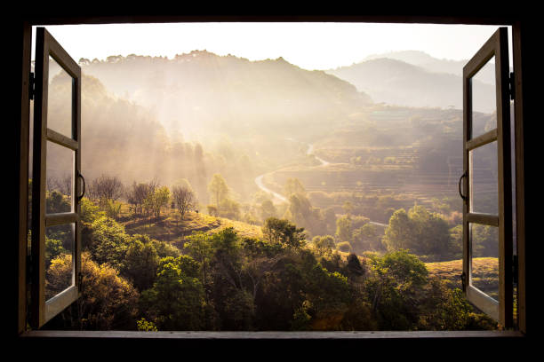

Naturaleza rural es vivir la vida

Desde hace bastante tiempo se esta menospreciando el mundo rural, y estan equivocados, el mundo rural es la base, los cimientos de nuestro gran rascacielos llamado "civilización". Es tan facil para nosotros conseguir todos los productos de primera necesidad, que no nos damos cuenta lo que hay detras, lo que se esconde entre bambalinas.
El mundo rural y su naturaleza nos aporta la chispa de la vida, que nos apaga la rutina cotidiana de lo urbano. Por ello nos decidimos a crear este espacio colaborativo, que une lo mejor de ambos mundos, sin pretender socabar la importancia de cada uno de ellos.
